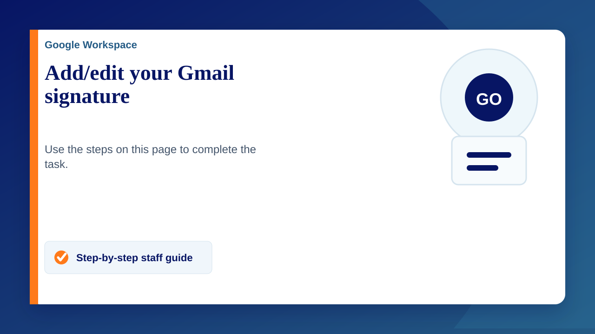

Everyone at Claremont should have the School approved email signature. See example below. You will need to change the address and telephone numbers depending which site you're mainly based at.
Add or change a signature
- Open Gmail.
- In the top right, click Settings Settings and then See all settings.
- In the "Signature" section, click create new and add your signature text
- Optional: Change when your signature is sent
- At the bottom of the page, click Save Changes.
If you struggle with the formatting (please copy and paste from an internal email sent to you).